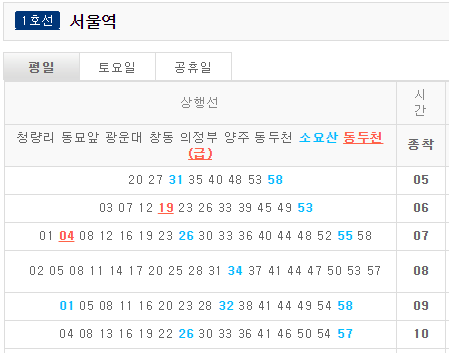
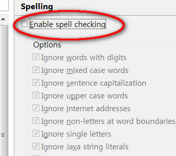

프로그래밍 카테고리
-
TV 동네 탐방
연전에 달인의 추억이라는 프로그램을 만들어서 올렸는데 이번에 시간을 내서 버전업을 해봤다. 이름하여 "TV 동네 탐방". 이번엔 생활의 달인 한 프로그램 뿐 아니라 여러 TV 방송 데이터를 수집했고 검색 기능까지 넣는 등 업그레이드해봤다.

-
자바에서 람다, 스트림을 사용할 때 주의할 점
람다, 스트림은 자바 8에서 도입되면서 자바를 확실히 버전업 시킨 중요한 기능이었고 현재까지도 자바의 함수형 프로그래밍 개념에 가장 중요한 부분이 된다. 람다, 스트림을 통해 코드가 간결해지고 효율적이 되지만 반면에 몇 가지 주의할 점이 존재한다. 자바로 데이터 처리라든가 복잡한 로직을 코딩할 때 경험한 사례에서 이러한 주의할 점을 정리해봤다.
-
스프링 부트 웹앱에 HTTPS 프록시 붙이기
스프링 부트로 웹앱을 만들 경우 기본적으로 HTTP 80 포트에서 실행되는데 웹앱 자체를 수정하지 않고 Node http-server 모듈을 활용하여 로컬 개발 환경에서 자체 서명한 TLS/SSL 인증서를 만들고 HTTPS 443 포트를 프록시로 웹앱 앞 단에 두는 방법을 알아본다.
-
d3로 그린 이마트 개점 애니메이션
전국 이마트 지점의 연월별 개점 현황을 지도에 애니메이션으로 표현. 이마트 신촌점이 개점하면서 오랜만의 신규 개점이 뉴스로 보도되었다. 연월 시간에 따라 이마트 점포가 개점되는 현황을 d3 자바스크립트 라이브러리 등을 사용하여 지도에 표현한다.
-
워드프레스에서 개츠비로 갈아타다
벌써 3주 이상 블로그 환경을 워드프레스에서 개츠비(Gatsby)로 옮기고 있다. 발단은 도메인 문제가 걸린 외부적인 요인인데 원하지 않게 시간이 많이 소모되고 있지만 결과적으로 요즘 유행하는 Jamstack에 대해 알아보고 개츠비 기반의 정적 사이트 제작에 대해 여러가지를 정리해볼 수 있었다. 아직 진행 중이고 문제도 많아 언제 끝날지 모르지만 일단 GitHub에 정착하게 되어 글을 올려본다.
-
프로그래밍 글꼴 비교
어떤 사람에게는 프로그램을 코딩할 때의 스타일이 직업적 신념과 같은 무게를 주는 것 같다. (물론 반대로 아예 무신경인 사람도 그 이상 많을 듯?) 난 그 정도는 아니지만 보기 좋고 정리도 잘 돼야한다는 믿음은 계속 가지고 있고 자주 프로그래밍 글꼴을 찾아보곤 했다. 오늘은 프로그래밍 글꼴 비교를 통해 나름대로 그 스타일에 어떤 차이가 있는지 보려고 한다.

-
스프링 부트 + 리액트 개발 셋업 2018
오늘 오랜만에 올리는 글은 스프링 부트 + 리액트 개발을 2018년 현재 시점의 도구들로 셋업하는 방법에 대해 써보고자 한다. 아직까지 상용 프로젝트에서는 두 가지 조합을 본 적이 없지만 현재까지 추세나 장점을 볼 때 앞으로 대세가 될 것이라 확신한다.
-
달인의 추억
가끔 SBS 생활의 달인을 재밌게 보면서 뭔가 혹하는 내용이 나오면 실제로 가보고 싶을 때가 있다. 그 장소의 주소를 SBS 방송 게시판을 통해 찾아보게 되는데 이걸 지도에서 전체적으로 눈으로 보게 만들면 어떨까 하는 생각을 했었다. 그래서 시간을 내서 똑딱거려 웹페이지 하나를 만들어봤다. 이름하여 "달인의 추억"!
-
프로젝트의 쓴맛
SI 업계에 있은지 10여년을 훌쩍 넘겼지만 여전히 매 프로젝트마다 쉽게 넘어가는 프로젝트는 없는 것 같다. 프로젝트마다 난이도가 다르고 수행 여건이 다르기에 각각의 특성은 매번 달라지고 그 때마다 새로운 경험을 하면서 뭔가를 배우게 된다. 왜 경험이 누적되는 데 반해 "프로젝트의 쓴맛"은 여전할까? 달콤상콤한 프로젝트란 나하고 거리가 먼 걸까?
-
광역철도 역별 시간표 기능 보완
현재 코레일(한국철도공사)의 광역철도 역별 시간표 웹페이지에 가보면 수도권 전철을 비롯한 다양한 철노 노선의 역별 시간표를 볼 수 있다. 그런데 이게 내가 볼 때는 기능이 불편하다. 오늘은 그래서 이 웹페이지를 좀 편하게 바꿀 방법을 만들어봤다.
 -
자바에서 데이터 캐시 구현하기
오늘은 자바(Java)에서 데이터 캐시(cache)를 직접 구현하는 방법을 정리해보고자 한다. 많이들 사용하는 Ehcache 같은 라이브러리도 있고 별도의 기계로 캐시 서버를 두는 방법도 있지만 캐시의 개념은 그리 어려운 게 아니며 특히 읽기 전용 캐시는 애플리케이션에서 간단하게 구현할 수 있다. "캐시! 어렵지 않아요~"
-
커밋 주석은 왜라는 질문에 답할 수 있어야 한다
개발자들의 일상 업무 중 하나는 소스 코드를 작성하고 버전 관리 도구를 사용해 "커밋"하는 일일 것이다. 소스 저장소라고 하는 신성한 영역에 내가 공들여 만든 소스 한 조각을 추가함으로써 IT 시스템을 진화시키는 것이다. 마치 매트릭스 3편에서 네오가 자신의 몸을 데우스 엑스 마키나에게 맡겨 가상의 소스를 건네주는 것처럼.
-
애니메이션 easing에 숨은 비밀
UI 애니메이션을 코딩할 때 꼭 들어가는 양념 같은 게 있다. easing. 우리 말로는 한 마디로 옮기기 힘들어 풀어서 말하자면 애니메이션 흐름을 매끄럽게 이어주기 위해 동작 속도를 조절하는 것이다. (경제 용어에서는 quantitative easing을 "양적 완화"로 옮기기는 한다.)
-
이제는 Spring Boot를 써야할 때다
스프링 프레임웍(Spring Framework)의 현행 버전은 4.1.x다. 그런데 세월이 흐르고 모든 것이 변해가는데 2014년 4/4분기인 현재 시점에서 아직도 2.5 버전대의 습관에서 못 벗어난 경우를 가끔 본다. 과감히 바꿔야할 때가 됐다. 이제는 Spring Boot를 써야할 때다. 스프링 부트는 스프링 프레임웍을 사용하는 프로젝트를 아주 간편하게 셋업할 수 있는 스프링 프레임웍의 서브프로젝트다.
-
DB별 CSV 파일 로딩 방법
개발하면서 심심치 않게 CSV 파일을 데이터베이스에 부어 넣어야 하는 경우가 생긴다. 시스템을 처음 구축하면서 초기 데이터를 만들어 넣는다든가 뱃치성 작업으로 외부 시스템과 연동한다든지 할 때 등이다. 그래서 한번 DB별 CSV 파일 로딩 방법을 정리해야겠다는 생각이 들었다. 보다 체계적인 설명이나 자세한 옵션들은 역시나 사용 설명서를 참고하도록 한다.
-
비올 때 걸을까? 뛸까?
장마철이라 비가 오락가락한다. 어렸을 때부터 헷갈리던 것 중 하나는 비올 때 우산이 없는 경우 걸어야 비를 덜 맞는지 뛰어야 덜 맞는지 하는 것이었다. 뛰면 앞에 있는 비를 미리 가서 더 맞는 거 같기 때문이다. 내 경우 이 궁금증이 해결된 것은 대학 때이다. 벡터를 가지고 유량이 유입되는 양에 대한 계산을 하고서야 정확히 어떤 게 유리한지 알 수 있었다.그런데 이것을 수치 계산이 아니라 21세기의 컴퓨터 기술을 활용해 시각적으로 보이면 좋지 않을까 생각이 들었다. 그래서 한번 만들어봤다. 비 맞기 시뮬레이션!

-
MongoDB University 강의 2강 – CRUD 1
지난 1강에 이어 두 번째 강의를 정리해본다. 이번 주제는 관계형 데이터베이스에서 흔한 작업들, 즉 CRUD라고 하는 작업을 MongoDB에서는 어떻게 처리하는가에 대한 내용이다. 내용이 길어 1, 2로 나눈다.CRUDMongoDB에서는 CRUD를 다음과 같이 말한다. 이러한 기능은 관계형 DB의 SQL 같은 별도 언어가 아니라 자바스크립트나 자바와 같은 개발 언어의 구문 형태로 API가 제공된다.
-
MongoDB University 강의 1강 - 개요
MongoDB University에서 자바 개발자를 위한 MongoDB 강좌를 들었다. 시작한지 꽤 됐지만 바쁜 핑계로 아직도 끝내진 못했는데 정리 삼아 올려본다. 서너달에 한번씩 여러 강좌를 순환하므로 관심있다면 수강해보길 권한다.
-
알아두면 편리한 자바 유틸리티 클래스들
프로젝트를 하다보면 비슷한 기능들이 자주 사용되는 경우가 있고 개발자들은 흔히 이런 기능들을 스태틱(static) 메서드로 만들어 유틸리티 클래스를 만들곤 한다. 그런데 이런 유틸리티 기능들이 사실 우리가 이미 사용하는 오픈소스 프레임웍이나 라이브러리에 포함된 경우가 상당히 많다. 또한 개발자가 나름 만든 클래스에는 버그가 숨어 있는 경우도 많아서 가급적 검증된 라이브러리를 사용하는 게 훨씬 낫다. 이번 글에서는 알아두면 편리한 자바 유틸리티 클래스들 에 대해 찾아보았다.

-
애플 스위프트 (Swift) 프로그램 언어
애플 국제 개발자 컨퍼런스(WWDC) 2014에서 스위프트 (Swift)라는 새로운 프로그램 언어가 발표되었다. 사실 이 컨퍼런스에서 여러가지가 주목을 끌고 있지만 그중 스위프트는 개발자로서 내 관심을 끌었다. 원래 나는 얼리어답터가 아니라 나랑 직접 관련이 없는 것이면(애플은 나와 상관 없는 세계였다) 새로운 것이 나와도 그냥 그런가보다 했다. 모두들 자바스크립트의 신세계를 개척하는 데 바쁘고 모바일은 자바스크립트를 제외하면 자바와 오브젝티브-C로 팽팽한 상황에서 새로운 언어라니! 이건 필시 오브젝티브-C를 넘어 보다 많은 개발자를 끌어모으겠다는 전략?!
-
톰캣의 컨텍스트 외부로 경로 매핑하는 방법
일반적으로 웹 프로젝트를 진행해보면 디자인은 디자인팀에서, 프로그램은 프로그램 개발팀에서 별개로 진행하게 되어 별개의 산출물이 만들어진다. 그래서 개발팀의 프로젝트 소스에 디자인 산출물, 예를 들어 이미지나 CSS 파일을 일일이 받아 넣기가 곤란하거나 효율상 넣지 않기로 하는 경우가 대체적인 프로젝트 흐름이다. 이럴 때 개발팀에서 톰캣의 컨텍스트 외부로 경로 매핑하는 방법이 필요해진다.
-
CSS counter로 다단계 순번 만들기
HTML의 순서 있는 목록(ordered list)에는 자동으로 번호가 붙게 돼 있다. 그런데 이 번호라는 게 기본 상태에서는 1, 2, 3,...이고 CSS의 list-style-type을 사용하면 숫자대신 알파벳이나 로마자를 사용할 수는 있기는 하지만 해당 단계에 대해서만 표시하고 다단계는 되지 않는다. 오늘은 CSS counter로 다단계 순번 만들기를 알아보자.
-
지난 프로젝트의 교훈
최근 참여한 프로젝트가 얼마 전에 끝났다. 매번 프로젝트가 끝날 때마다 다음 프로젝트는 더 잘하자고 생각하면서도 지난 프로젝트의 교훈을 잘 활용하지 못하는 것 같다. 이번에는 오랜만에 한번 정리해보기로 했다.
-
안드로이드와 iOS 웹킷 브라우저의 차이점
최근에 모바일웹 프로젝트를 하면서 알게된 안드로이드와 iOS 웹킷 브라우저의 차이점을 개발자 입장에서 정리해볼까 한다. 안드로이드, iOS(아이폰, 아이패드)의 웹브라우저는 모두 웹킷(WebKit) 기반 브라우저라 모바일웹을 개발할 때 브라우저별 차이가 별로 없이 쉽게 개발할 수 있을까?

-
이미지의 가로세로비를 유지하면서 틀 안에 맞추려면
웹사이트 중에는 종종 이미지가 가로세로비(종횡비)를 못 맞추고 짜부라진 모양으로 나오는 곳들이 있다. 크기가 큰 사진들은 괜찮은데 좁은 자리에 가로 세로 크기를 한정시켜 맞춰넣는 얼굴 사진이나 광고 같은 것들에 그런 게 종종 보인다. 얼굴이 너무 넓적하다든지 몸매가 완전 날씬한 형태로 나오는 사진들이 그런 것들이다.
-
데이터베이스 SQL 특성 비교
(2015년 10월 1일 현황: 구글 문서를 원본으로 하여 파일 내보내기를 통해 페이지를 제공하고 있었는데 현재는 파일 형식이 바뀐 등의 문제로 페이지가 안나오고 있다. 시간 나면 다시 수정해야할 듯...)그 동안 프로젝트를 많이 하다보니 데이터베이스도 여러가지를 사용해봤는데 여러 다른 개발 분야처럼 제품간 차이가 꽤 나는 분야가 바로 이 영역이다. SQL 구문 등에 있어서 크고 작은 여러 차이가 사람을 혼란스럽게 하다보니 2009년에 데이터베이스 SQL 특성 비교 문서를 만든 적이 있다.
-
톰캣 8 소개
아파치 톰캣(Apache Tomcat) 8 버전이 곧 베타에서 정식 버전으로 발표될 예정인데 스프링 프레임웍 팀에서 웨비나를 하길래 오늘 방금 전 자정부터 1시까지 그걸 봤다. 동영상 리플레이 및 발표 자료는 1-2주 후에 https://www.youtube.com/springsourcedev에 올린다고 한다. 아래 웨비나 내용 및 공부한 내용을 정리해본다. 예제 출처는 github.com/swilliams-pivotal/s2gx-tomcat다.

-
새로 발표된 스프링 4.0에 대해 알아보자
[덧글] 1월 23일에도 웨비나가 있었고 이번엔 앞부분을 약간 놓치고 다 봤다. 관심 있는 사람은 유튜브에서 보기 바란다. 구랍 12월에 스프링 프레임웍 4.0 GA가 발표됐었고 엊그제 Spring IO에서 웨비나를 한다길래 꼭 보려고 했는데 그만 놓치고 말았다. 요즘 야근으로 정신이 없다. T_T 그래서 남이 알려주기 전에 직접 알아보기로 했다. 출처는 스프링 블로그와 지침서 등이다. 과연 스프링 4.0에서는 뭐가 새로워졌는가?
-
자바스크립트와 자바에서 공백 문자란?
웹 프로그램을 개발할 때 인터넷 익스플로러(IE)는 참 개발자를 괴롭게 한다. IE만의 예외 상황을 고려해야 하는 번거로운 경우가 얼마나 많은지... 특히 IE 8 이하는 발표된지 몇 년이 지났는데도 우리나라에서는 아직 사용자가 많다! 수년 전까지도 윈도 XP에서 IE 6을 사용하는 사용자가 가장 많았던 우리나라에서 개발자는 이래 저래 힘들다. 여기 그 문제 중 또 하나를 얘기해보려고 한다. 공백(whitespace) 문자의 범위에 대한 문제다.
-
웹사이트가 방문자에 대해 알아낼 수 있는 것들
개인정보보호법도 발효되고 사생활 보호라는 주제가 여러 곳에서 화두가 되고 있지만 정작 개별 사용자들은 자신의 사적 데이터가 어떻게 노출될 수 있는지 잘 모르고 있을 것이다. 이 글에서는 웹 개발자라면 알 수 있는 여러 기법에 의해 웹사이트 방문자에 대해 알아낼 수 있는 정보가 어떤 것이 있는지 나열해보고자 한다.
-
자바 서블릿 컨테이너별 규격 버전 지원
서블릿 컨테이너 또는 웹 애플리케이션 서버별로 서블릿이나 JSP를 지원하는 버전을 알아볼 필요가 있게 되었다. 이러한 버전은 web.xml에 명시되어서 컨테이너 구동에 영향을 주기 때문에 운영 환경에서 반드시 신경써야할 항목이다. 특히 우리나라에서는 제우스(Jeus)가 공공 분야에서 점유율이 상당하므로 꼭 정리가 필요했다. 여기 표 하나로 정리해봤다.
-
PhantomJS를 활용한 웹 스크레이핑
웹에서 뭔가 필요한 자료를 찾을 때가 종종 있다. 한 번만 찾고 마는 경우라면 간단한데 정기 간행되는 기사나 웹툰(Webcomics) 같은 연재되는 컨텐트를 보려고 하면 일일이 눌러서 봐야 하기 때문에 흐름이 끊기는 게 싫기도 하고 광고가 페이지마다 뜨는 것도 마음에 안든다. 그래서 웹 스크레이핑(Web scraping)으로 필요한 컨텐트만 콕 집어서 한번에 가져온 다음 여유있게 보는 것이 편리할 것이다. 그래서 작성해봤다. 웹페이지의 컨텐트를 이미지로 저장하거나 텍스트 파일로 저장할 수 있는 자바스크립트 프로그램!
-
개발 능력은 연차에 비례하지 않는다
[이 글은 내가 21일에 현대자동차에서 발표했던 세미나 내용 중 일부를 좀더 확장하여 작성해 본 것이다] 다른 나라도 그런지 모르겠지만 우리나라의 개발자로서 마음에 안드는 것 한 가지는 개발자 평가를 연차로 하는 방식이 일반적이라는 것이다. 개발자 개개인마다 경험과 능력이 다른데 연차로만 평가하다니 이게 무슨 초등학생 학년 올라가는 건가?

-
Jenkins에서 Tomcat 재구동하기
Jenkins는 빌드, 배포, 뱃치 작업 등 다양한 용도로 활용할 수 있는 CI 서버다. 그에 맞게 플러그인도 아주 다양해서 여러가지 컴퓨터 작업을 자동화할 수 있다. 내 생각엔 아마도 조만간 커피를 끓여주는 플러그인도 나올 것 같다. ;) 플러그인 중에 Deploy 플러그인이 있는데 이걸 사용하면 자바 개발자들이 애용하는 서블릿 컨테이너인 톰캣(Tomcat)으로 웹애플리케이션을 배포할 수 있다.
-
null 검사를 줄이려면
며칠 전 글에서 자바 초급 개발자를 벗어나려면 null 검사를 잘 해야 한다는 말을 했었는데 그렇다고 소스 코드 한줄 한줄 마다 해야 한다는 의미는 아니었다. 예기치 않은 null이 발생할 만한 곳을 주의해야 한다는 의미다.일반적인 개발 업무 관행(practice)에서는 다음과 같은 방식으로 null 검사는 사실 많이 건너뛸 수 있다.
-
초급 개발자 딱지를 떼려면 이 정도는 해야 한다
이번 글에서는 그 동안 자바 개발자들의 소스 코드를 많이 리뷰하면서 본 여러 문제점들을 정리하여 초급 개발자 딱지를 떼려면 어떤 것이 기본인지 정리해볼까 한다. 초급 개발자들은 경험 부족으로 이러저러한 실수를 한다거나 소스 코드에 폭탄을 심어놓는 경우가 있다. 아래 얘기하는 것들에서 어느 정도 준비된 사람이라면 적어도 내가 볼 때 우리나라에서는 초급 개발자가 확실히 아니라고 할 수 있겠다.
-
속담으로 풀어보는 프로젝트 관리
매번 프로젝트를 하다보면 새로운 도전과 문제의 연속을 겪게 되고 이 과정에서 종종 생각나는 속담들이 있다. 선조들의 지혜가 어떻게 프로젝트 관리에 적용되는지 생각해보았다. 배보다 배꼽이 더 크다 프로젝트의 과업 범위를 잘못 파악하고 있다보면 배보다 배꼽이 더 큰 경우가 생긴다. 원래는 작은 일이라고 생각했던 것이지만 기술적 난이도, 요구 사항, 소요 시간 등을 미리 파악하지 못해 결국 다른 모든 일보다 중요하고 큰 일이 돼 버리곤 한다.

-
이클립스 Validation 답답증
이클립스(Eclipse)나 스프링 STS를 사용하다보면 수시로 "Building workspace (00%)"와 같은 절차가 진행된다. 이클립스 하단 상태 표시줄에 한참을 표시되면서 사람 복장 터지게 만드는 그것. 엊그제 STS 3.3을 사용하는데 예를 들어 57%에서 멈춘 후 계속 진행되지 않는 현상이 발생했다. 그전엔 그런 적이 없는데... 5분을 기다려도 10분을 기다려도 딴 짓하고 와도 진행되질 않는다. 취소하고 이클립스를 종료해도 다시 나타나고 강제로 죽이고 이클립스를 재실행해도 또 나타나고 꼭 57%에서 멈추는 것이다! 심지어 워크스페이스를 다시 만들어봤다. 이러면 모든 설정이나 구성 내역이 사라지고 다시 시작하는 거니까 문제가 사라져야 되는 거 아닌가?
-
추천 시스템 입문 2강 - 개인화되지 않은 추천
지난 번에 이어 추천 시스템 입문 2강이다. 추천 시스템은 한 강의가 2주 공부할 분량이라 그렇게 많은 분량은 아니다.2.1 개인화되지 않은 추천 서론뉴욕의 식당 안내인 Zagat Guide(나중에 구글에 팔려 웹으로 서비스됨)를 예를 들면 사람들이 {0, 1, 2, 3} 중 하나로 평점을 매기면 round(MEAN(평점) * 10) 계산으로 0 ~ 30점의 점수를 부여함.
-
자바에서 메일 보내는 방법
최근에 우리 회사 새내기 개발자가 e메일 보내기에 대해 약간이나마 어려움을 느낀 것 같길래 자바에서 e메일 보내는 방법을 다시 한번 정리해볼 필요가 있겠다는 생각이 들었다. 이 글에서는 JavaMail API, 스프링 API, 기타 방법으로 e메일을 발신하는 방법을 알아보기로 한다. 자바 메일 보내기
-
자바 리스트와 맵의 성능 비교
자바(Java)는 다양한 데이터 구조를 제공하고 있다. 특히 자바 1.2부터 등장한 Collections 프레임웍에서 유용한 컬렉션 유틸리티 클래스를 많이 보유하고 있다. (컬렉션 프레임웍을 공부하려면 Oracle에서 제공하는 자바 강좌도 유용하다.) 이러한 데이터 구조를 위해 여러 앨거리듬이 사용되는데 대표적으로 해시테이블과 같은 데이터 구조 앨거리듬이나 병합(merge) 정렬 같은 정렬 앨거리듬 같은 것들이 있다.
-
추천 시스템 입문 1강
요즘 Coursera에서 추천 시스템 입문(Introduction to Recommender Systems) 강의가 9월 3일에 개강하여 듣고 있다. 우선 이런 우수한 대학 과목을 온라인으로 무료 수강한다는 데 대해 대단히 감사하고 있다. 이 강의는 미국 미네소타 대학의 정규 과목을 옮겨 놓은 것으로 학부 학생도 온라인으로 똑같이 수강하는 과목이다. 미국에 가지 않고도 미국 대학의 정규 과목을 그대로 수강한다는 건 참 감격스러운 일이다. 물론 이미 몇 년 전부터 MIT 오픈코스웨어 등이 있었지만 수강생으로서 과제도 제출하고 시험도 볼 수 있게 정말 학생처럼 그것도 무료로 관리 받는 것으로서는 또 한번 새로운 변화라 할 수 있다.
-
HTML 요소의 가운데 맞춤
HTML에서 가운데 맞춤은 흔하게 필요한 UI 표현이다. 예를 들어 다음과 같이 회색 블록 안에 있는 작은 블록이 정 중앙에 위치하도록 만드는 경우다. 이 박스는 바깥 박스의 정 중앙에 위치한다
-
짝 프로그래밍의 힘
우선 짝 프로그래밍(Pair programming)을 아는가? 개발자 두 명이 단위 작업 하나를 수행하는 개발 방식을 말한다. 이제 한숨 돌리게 돼서 얘기하지만 심각한 위기를 맞은 프로젝트가 있었고 난 그 중심에서 방향을 잃고 있었다. 그 때를 생각하면 내가 무능했었나 자책도 하지만 어쨌든 해결이 됐고 그대로 흘릴 수 없는 중대한 경험을 했다. 단편적이지만 최고의 효과를 본 해법이 있었으니 바로 짝 프로그래밍이었다. 이 글은 그 얘기를 하고자 한다.
-
자바 5 + 톰캣 6의 매개변수 파싱 오류
어제 오늘 시간을 많이 잡아먹고 해결한 문제가 있어서 기록으로 남겨볼까 한다. 요즘 내가 진행 중인 웹 프로젝트가 있는데 운영 환경이 자바 버전 5에 제우스를 사용하는 환경이다. 개발 환경도 그에 맞추는 게 맞으므로 자바 버전은 5를 사용하는데 서블릿 컨테이너는 별 문제가 없겠지 생각하고 톰캣(Tomcat) 버전 6을 사용하기로 했다. 원칙적으로 서블릿 버전, JSP 버전도 운영 환경에 맞춰서 선택해야겠지만 요즘엔 아파치 톰캣 사이트에 가보면 6 버전 미만은 창고에 쳐박힌지 오래다. (여기서 창고란 메뉴 항목 중 Archives, 즉 보관소를 말한다)
-
STS 3.3 며칠 사용 후 리뷰
지난 7월 10일 Spring Tool Suite(이하 STS) 3.3.0이 발표됐다. 3.2 버전이 그전의 부진을 깨끗이 씻고 아주 만족스러웠던 터라 3.3이 나오기를 손꼽아 기다린 건 아니었지만 3.2 발표 때 앞으로도 성능 개선에 노력할 것이라는 약속이 있었기 때문에 궁금해서 사용해보게 됐다. 결론부터 말하자면 3.3을 사용하면 좀더 개발 만족도가 높아지겠으나 3.3을 사용하지 않는다고 시대에 뒤쳐지거나 뭔가 부족한 개발자가 되지는 않겠다 정도로 요약할 수 있겠다. 아래는 이클립스 3.8 기반의 STS 3.2 64비트 윈도 버전을 사용하다가 이클립스 4.3 기반의 STS 3.3.0을 사용해본 리뷰다.
-
다양한 경우의 HTTP 요청 여부 정리
웹페이지를 개발하다 보면 이러저러한 개체에 대해 브라우저가 서버에 HTTP 요청을 정말 할까하고 궁금한 경우가 있다. 예를 들어 display: none; 스타일을 줘서 보이지 않는 이미지도 서버에서 받아올까 하는 궁금증이다. 일전에 이러한 궁금증에 대한 다양한 사례를 퀴즈로 풀어보는 외국 사이트가 떠서 나도 좀 풀어봤다(이 사이트는 프로그램적으로도 참신하게 잘 만든 사이트다. 꼭 크롬에서 보기 바란다). 무지 어려웠다. W3C의 HTML이나 CSS 명세서에 없는 사항인 경우도 있고 브라우저마다 실제 구현도 다른데 그걸 어떻게 많이 맞추겠나.
-
자바스크립트 배열을 다시 알아보자
자바스크립트(JavaScript) 배열에 대해 전체적으로 알고 싶어하는 사람들이 많길래 다시 정리해보기로 했다. 배열, 즉 Array 객체는 자바스크립트에서 가장 많이 사용하는 객체고 아주 쉽게 사용하지만 그러면서도 웬만한 개발자들이 잘 모르는 사실들도 많이 숨어 있는 커다란 창고 같은 객체다. 지난 번 글 자바스크립트 배열 길이는 좀더 자세하게 들여다본 내용이었는데 이번엔 개요라고 할 수 있겠다.
-
새 이클립스를 사용할 때 나의 5분 설정
기업용 앱 개발에 있어서 이클립스(Eclipse)는 참 걸출한 녀석이다. 그런 만큼 길들이기도 신경쓸 것이 좀 있다. 난 기본적으로 새 이클립스를 사용할 때 5분 정도 시간을 투자해 항상 설정하는 것들이 있다. 사실 내 이클립스를 사용할 때가 아니다. 내 컴에서는 10여년간 이클립스를 사용하면서 웍스페이스를 거의 그대로 유지해왔기 때문에 새로 설정할 일이 거의 없지만 다른 개발자를 도와줄 때 그 사람의 이클립스 환경을 사용하면 한 번씩 손을 보게 되는 경우가 더 많다.
 -
Git을 사용해보자 - 2. Git 원격 저장소 - SSH 연결
지난 번 글에서 Git은 분산 버전 관리 시스템으로서 기본적으로 내가 작업한 모든 이력은 로컬(내 컴퓨터) 저장소에서 관리된다고 했으며 "push"를 사용해 내 작업을 원격지 저장소에 반영하고 "pull"을 사용해 원격지 저장소의 변경 내용을 내 저장소에 반영할 수 있다고 했다. 이번엔 그렇다면 원격지의 저장소를 구성하는 것은 어떻게 하면 될까를 알아보자. (내가 Git을 공부하면서 주로 참고한 자료는 Git 공식 싸이트의 설명서다. 일반적으로 가장 자세하고 신뢰도 있는 자료는 공식 문서이므로 내가 여기서 언급하는 것보다 자세하거나 다른 설명이 필요하다면 참고하기 바란다.)
-
Verlet 시뮬레이션 예시
지난 번에 Verlet 적산법 개념 설명에 이어 시뮬레이션 예시를 만들어봤다. 중력가속도만 적용되는 단순한 상황인 경우만 놓고 보니 아주 자연스러운 애니메이션이 만들어졌다. 또한 혼자서만 움직이는 게 아니라 입자를 마우스로 잡아 움직일 수 있게, 즉 인터랙티브하게 만들어봤다. 아래 예시는 IE9 이상 및 기타 최신 브라우저에서 볼 수 있다.
-
접근성을 고려한 JavaScript 사용
웹 접근성(Accessibility)을 고려할 때 자바스크립트(JavaScript) 사용에 대해 다시 좀 보기로 했다. 그 동안 공공 프로젝트를 여러 차례 하면서 우리나라 웹 접근성 표준에 대해 익히 알고 있었는데 오늘 이걸 다시 거들떠 봐야겠다는 생각이 들었다. 웹 접근성에 있어서 JavaScript에 대한 오해 JavaScript에 대한 웹 접근성을 고려하기 위한 "표준"을 우연찮게 다시 보게 됐는데 이상한 내용이 있었다. 우리나라의 웹 접근성에 대해 사실상 "표준"을 제시하고 있는 정보화진흥원의 웹 접근성 연구소에서 기술한 다음과 같은 내용이 문제다.

-
물리 시뮬레이션을 위한 Verlet 적산법
Verlet 적산법(integration, 계속해서 상태 변화가 있고 그 값을 누적해 더한다는 말)은 Wikipedia 글의 첫 줄에 밝힌 것처럼 뉴턴(Newton)의 운동 방정식을 적산하기 위한 수치 해석법이다. 이미 18세기부터 사용되었지만 1960년대에 프랑스 사람인 Verlet가 분자 운동학에서 많이 사용했다 해서 Verlet 적산법이라고 많이 부른다. (Verlet의 발음은 프랑스어라 익숙치 않지만 [vɛʁˈlɛ], 즉 베흘레와 유사한 것 같다. 외래어 표기법상으로는 베를레가 맞을 것 같다.)이미 HTML5가 나오면서 canvas에서 애니메이션 등 다양한 그림 기법이 시도됐는데 최근에는 천이 찢어지는 애니메이션, 거미줄의 흔들림 등 물리적 운동 효과를 canvas에서 보이고 있다. 세상에나! JavaScript(자바스크립트)로 물리 운동을 시뮬레이션하다니!
-
온라인 타이머
카운트다운 방식의 온라인 타이머를 찾아보니 마음에 드는 것이 없었다. 단순히 숫자만 표시하지 말고 카운트다운의 긴박감이 있으면 좋겠는데 말이지. 타이머 프로그램이 어려운 건 아니니 그래서 한번 만들어보기로 했다. 그리고 프로그램 공부하는 사람들을 위해 여기 설명도 올리고. 최종 결과물은 여기를 보도록 한다.
-
Java와 PHP
우리나라 상용 소프트웨어 프로젝트에서 가장 많이 사용되는 언어는 Java다. 공공기관 업무용 웹사이트, 민간 상업용 웹사이트, 웹서비스 등 시스템간 연동, 뱃치성 작업 등 단순 업무 프로그램, 또한 안드로이드 모바일 앱 등에서 완전 "갑"이다. 단적으로는 Java의 캐치프레이즈인 "엔터프라이즈" 지원을 바탕으로 한 상업적 성공으로 인해 그 밖의 언어는 상대적으로 훨씬 열세를 보이고 있다. 그런데 그 와중에 민간 상업용 웹사이트, 민간 커뮤니티 웹사이트 등에서 상당한 점유율을 보이는 언어가 PHP다. 미국 등에서는 이러한 분야에서 Python, JavaScript, Ruby 등이 발군의 성과를 보여주고 있지만 우리나라 및 외국도 여전히 일부에서는 PHP가 꾸준히 힘을 발휘하고 있다. 그럼 Java는 왜 그렇게 성공한 것이고 PHP는 어떻게 꾸준히 사랑받고 있는 것일까? 이글은 그동안 내가 두 언어를 모두 접해보면서 든 개인적인 생각을 남겨보고자 한다.
-
Git을 사용해보자 - 1. Git 개념
분산 버전 관리 시스템(DVCS)인 Git이 나온지 벌써 몇 년이 지나 개발자들에게서 상당한 호응을 받고 있지만 난(또는 우리 회사) 본격적인 사용은 미루고 있었다. 얼마 전부터 제대로 해보자고 이것저것 해보고 있는데 이제 블로그에도 한번 정리삼아 올려보기로 한다. Git을 사용해보자 첫번째 주제로 Git 개념부터 꺼내기로 한다. 이 다음에는 기회되는 대로 Eclipse Git, Git 셸 명령, GitHub, Git 작업 패턴 등을 다뤄보기로 한다.
-
mysqldump SQL 호환성 높이기
mysqldump를 사용해 SQL 스크립트를 만들어낼 때 여러가지 목적이 있겠지만 다른 데이터베이스와의 호환성을 염두에 두는 경우가 종종 있다. 예를 들어 MySQL을 개발용으로만 사용하고 다른 데이터베이스를 실운영용으로 사용하는 경우가 있을 수 있다.데이터베이스간의 호환성 문제는 단순한 문제가 아니므로 이 글에서는 일단 mysqldump 명령만을 주제로 SQL 호환성을 최대한 높이는 방법을 알아보자. mysqldump로 결과물을 어느 정도 호환성 있게만 만들어도 많은 수고를 줄일 수 있다. 우선 mysqldump는 다음과 같은 형식으로 명령을 실행한다.```sqldump [옵션] [DB명 [테이블명 ...]]```
-
자바스크립트 배열 길이
자바스크립트 배열 길이는 동적으로 변한다. 그렇다면 배열 변수 선언이나 요소 정의, 삭제 등의 조작에 따라 그 값이 어떻게 달라질까? 다음은 구글 크롬 브라우저의 콘솔 창에서 배열을 선언하고 요소를 추가하는 과정을 보인 것이다. 다른 브라우저에서도 유사한 결과를 볼 수 있다.
-
자바스크립트 디버깅 - 개체 속성 보기
몇 년 전부터 자바스크립트 디버깅이 참 쉬워졌다. 이미 FireFox, Chrome 등 다른 브라우저는 물론이고 MS의 인터넷 익스플로러까지도 개발자 도구를 포함하고 있기 때문에 웹페이지 디버그 모드로 들어가서 한 단계, 한 단계 실행하면서 개체의 정보를 보고 뭐가 문제인지 찾을 수 있게 되었기 때문이다. 그런데 가끔 이러한 브라우저 개발자 도구를 사용하지 못한다든가 개발자 도구에서 들여다보기에는 답답한 경우가 있다. 직접 개체의 속성 정보를 원하는 대로 출력해보는 건 어떨까?
-
STS 3.2 발표와 놀라운 성능 향상
Spring Tool Suite(이하 STS) 3.2가 엊그제인 3월 11일 발표됐는데 3.1에 비해 3.2에서는 놀라운 성능 향상을 느낄 수 있었다. 일단 아무 것도 안하고 시작, 종료만 해도 그 전 버전에 비해 확실히 달라졌음을 알 수 있을 것이다. 그 전 버전은 시작 후 Java Tooling, 프로젝트 빌드 등으로 시간을 잡아먹었는데 이번엔 확실히 빨리 시작하고 초기화도 금방 끝난다.
-
스프링의 웹 요청 처리 흐름
스프링은 주로 웹 개발에 사용되는데 스프링의 웹 MVC 참조 설명서나 기타 여러 학습 자료를 보면 다음과 같은 유명한 흐름도를 보게 된다.

-
DB 질의 결과를 가로로 펼치기
예를 들면 부서 테이블과 직원 테이블이 있을 때 다음과 같이 부서별 직원 목록을 가로로 펼쳐서 구하고 싶은 경우 어떻게 해야할까? 부서 직원 총무부 김박사, 이사장, 최고집 영업부 이달수, 무대리 자재부 강감찬, 이순신, 을지문덕, 김유신 기회가 되면 다음에 풀어서 설명해야겠지만 일단은 다음 링크를 참고하도록 한다.
-
프로그램적인 파일 다운로드
웹에서 파일을 다운로드하는 방식은 두 가지로 나눌 수 있다. 하나는 Apache 등의 웹서버 프로그램을 통해 디스크 상에 있는 그대로의 파일을 다운로드하는 경우와 또 하나는 Java, .NET 등의 프로그램에서, 예를 들어 DB 조회 결과를 CSV, XLS 등으로 출력하거나 임의의 파일 내용을 출력하는 방법으로 프로그램적으로 파일을 다운로드하는 경우다.